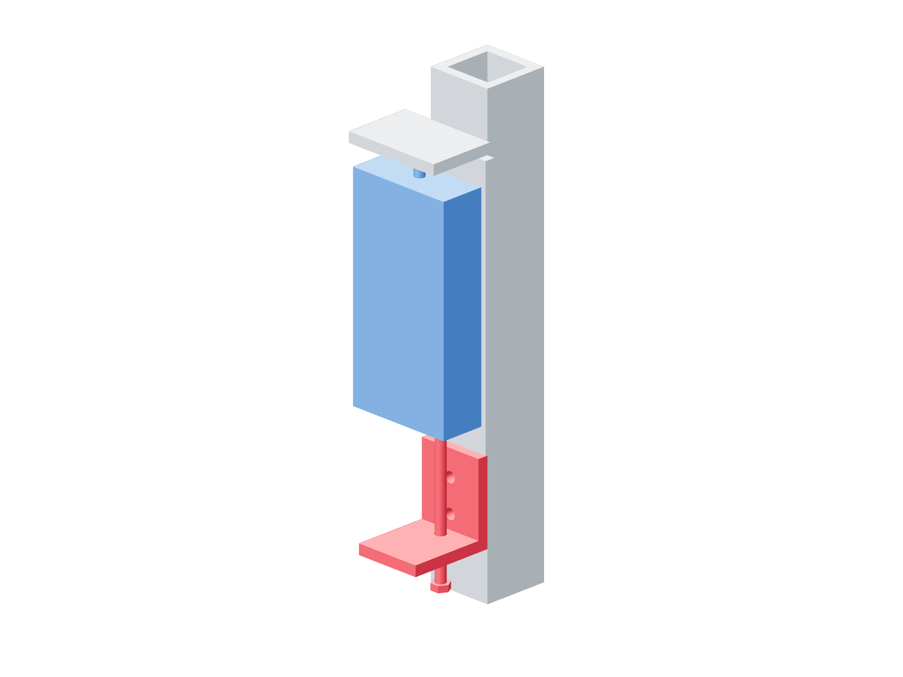

Retention / actual load106 / 179
Fit the metal feed jack
A screw feeds the gauge backing in small restrained increments. The backing guides retain it laterally while allowing smooth axial travel.
Addinstalled-Z-jack-angle · 2 M6 × 16 / slot-8 T-nuts / washers · fully threaded M6 × 80 / 2 nuts / 2 washers
Tools / setup10 mm wrench · camera / indicator · head supported · catch within 1 mm

- Mount the metal jack angle 60 mm below the gauge-back lower edge with both M6 × 16 joints.
- Fit the fully threaded feed screw so its tip reacts only on the metal backing edge. Fit the lower working nut and upper lock nut at the angle.
- Leave visible axial clearance under the guide washers so both slots slide. The complete head force must enter only through the probe/platen.
- Hold the lower nut, loosen the upper lock nut and feed at most 1/12 turn: 0.0833 mm. Relock after every increment.
Ready when
The screw controls smooth backing feed and the independent catch remains within 1 mm. Column braces stay tight; the moving head touches only the platen. A stuck guide or jump fails feed. Unload onto the independent support and correct it. Never loosen braces or lift the head by hand to obtain a reading.